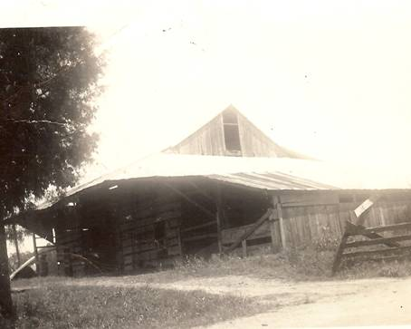
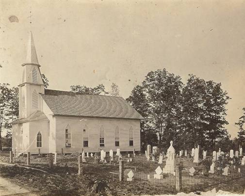
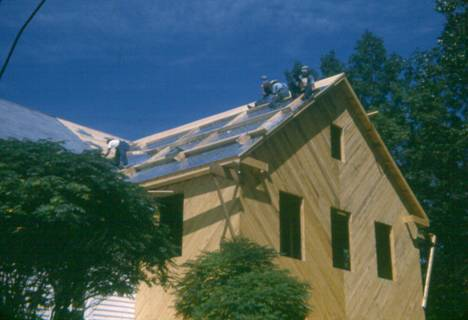
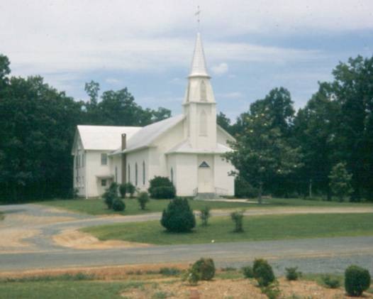
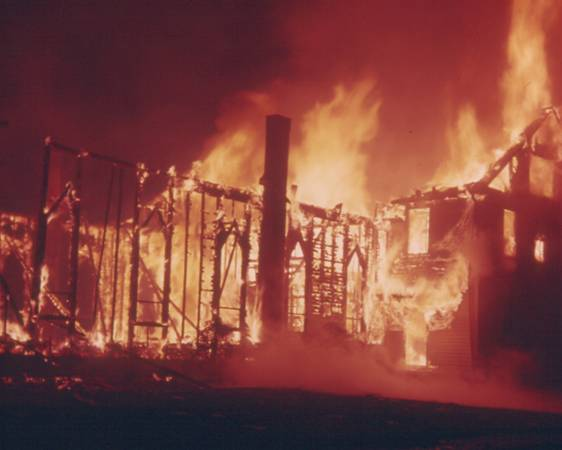
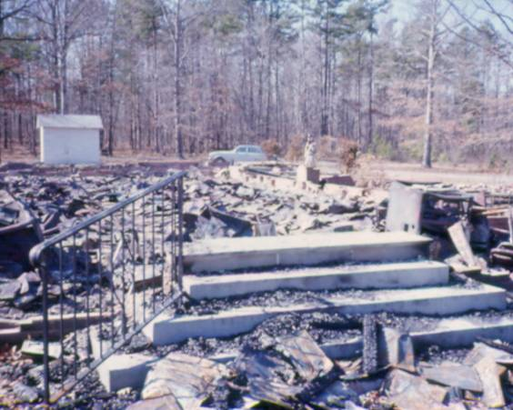
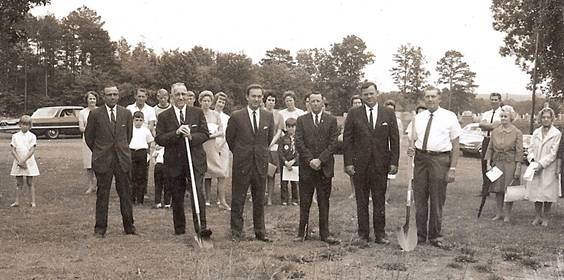
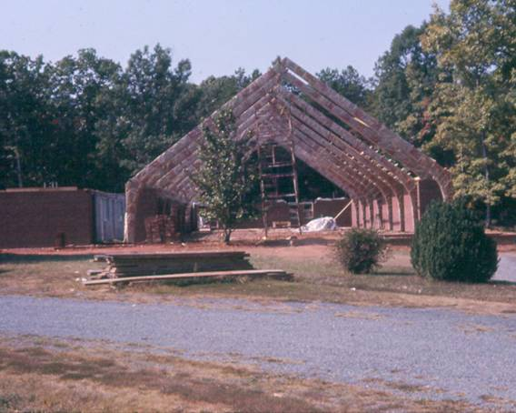
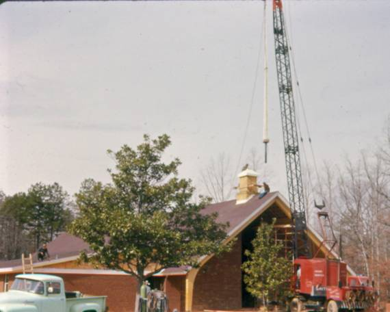
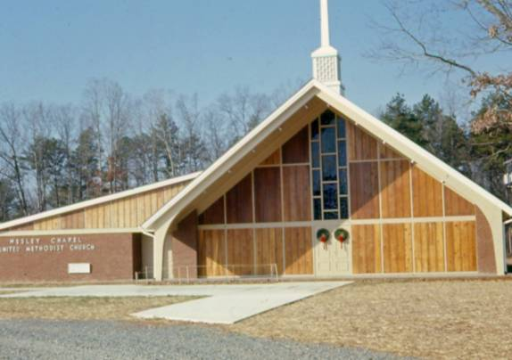

As the early members met in a barn attempting to form a church, the clouds of this nation's most turbulent period were quickly gathering. The outbreak of a civil war that would divide this nation was only a few months away. According to earlier information contained in the church archives, "regular sessions" were held each summer from May through August, but Sunday School was still held on a regular basis even though our nation, state, and community became engulfed in this struggle. The effects of this national struggle would be felt for many years. Wesley Chapel became Methodist Episcopal South and others in the area were Methodist Episcopal North.
Wesley Chapel endured several congregational changes over the last 150 years. Several local churches emerged from the Wesley Chapel congregation and have become equally important places of worship still serving the community. In 1942, the members of Misenheimer Methodist Episcopal Church merged with the congregation of Wesley Chapel. These changes were surely very difficult for all involved at the time, but they have ultimately helped to build a stronger local church community to serve the growing needs of the area.
Wesley Chapel has grown from being served by a circuit preacher who would visit and preach a few times a year, then to a congregation on a charge that shared a minister with other congregations, to finally having the ability to support and enjoy a full-time pastor in a parsonage. The congregation of Wesley Chapel has always dealt with circumstances in a positive, constructive, and most Christian way. As history has shown us, the only way for a church to not only survive, but also to flourish, is to provide for the needs of its church family, the immediate community, and the greater community beyond by doing so in the most Christ-like way possible. As long as we keep Him as our example and our guide, we will provide for the needs of future generations in this community.
On October 9th, 1858, an agreement was made between M.B. Barringer and Allison Dry to convey a tract of land to a group of trustees of The Methodist Episcopal Church South for the sum of five dollars. The trustees, Moses Dry, Eli Shaver, Ambrose Lents, Gorite Sell, and Henry T. Lents and their successors, were to construct a house of worship on this parcel of land to be used by the members of The Methodist Episcopal Church South according to the rules and discipline of the church and their general conference. The date of this agreement is the first definite date in the history of what is now known as Wesley Chapel United Methodist Church. This parcel of land is currently used as the Wesley Chapel Cemetery.
According to earlier written accounts, the first members of this congregation had been meeting prior to October 9th, 1858, in a barn located on the Dry farm southeast of the present Wesley Chapel cemetery. The members continued to meet in this barn until a permanent wooden structure was constructed on the newly acquired land. It was town down the late 1930's.

Original Barn Meeting House on the Dry farm ~ circa 1858
The construction date for the second structure used by the congregation is not known. Earlier written accounts referred to this building as a "small frame structure" that was used until 1890 when a larger church building was constructed. At this time, there are no known photographs of that building. The larger structure, completed in 1890, stood near the center of what is now the Wesley Chapel Cemetery. Several surviving photographs show the church in this location. All of them were taken just after the addition of the steeple in 1916.

Wesley Chapel Church ~circa 1916
This structure remained in that location until 1927. Evidently, the expanding congregation with its growing cemetery needs decided to relocate the church building across the road to a newly acquired parcel of land. The newly moved structure served the congregation well until the mid 1940's. At that time, the need arose for additional space for Sunday school classrooms. In August 1947, construction began on a new two story addition on the rear of the church.

Sunday School Addition ~1947
The addition was completed and used beginning in early March, 1948. Within on a few weeks, all financial obligations had been met and the addition was dedicated by Bishop Clare Purcell on June 6, 1948. During the 1950's, the sanctuary was completely remodeled and stained-glass windows were added.

Wesley Chapel Church ~circa 1966
This enlarged structure was home to the Wesley Chapel congregation until February 19, 1967. In the early morning hours of that Sunday, the large white building burned. Only a few pieces of furniture and the Bible from the pulpit could be saved.

Fire Destroys Church -February 19, 1967

Aftermath of Fire - 1967
The congregation found itself back in the same position from where it started, just over 108 years earlier.
As in our earliest years as a congregation, we were graciously provided with a place to meet until a permanent structure could be built. Pfeiffer College offered the congregation the use of its chapel. For more than two years, the Wesley Chapel congregation worshiped with the college community in the Pfeiffer Chapel while construction progressed on the new structure. During this extremely difficult period of Wesley Chapel's history, the Rev. William H. Faggart guided the congregation to yet another place to worship. The thoughts, prayers, and support from the community helped to make possible the construction of a new church building.
A groundbreaking ceremony took place on May 4, 1968. Dr. Elwood Carroll, superintendent of the Albemarle District, presided.

Groundbreaking Ceremony -May 4, 1968

Rebuilding 1968-1969

Setting of Steeple - 1968-1969
On August 3, 1969, the first service was held in the new church building. This beautiful new structure continues to serve as the home of the Wesley Chapel congregation.

Newly Completed Structure - 1969
I was asked, as the "new" pastor, to reflect on the future direction of the church. From the little I do know about its past, I know Wesley Chapel is a strong and faithful church that has served God well. For 150 years, God's word through United Methodism has been proclaimed in the community surrounding this church. Many people have come to know God's love and grace because of the people at Wesley Chapel. The future of this church is also up to the people called United Methodists. We must first be in constant prayer and discernment of God's will for Wesley Chapel. Our task is to make disciples and bring others to know the love and grace of Jesus Christ. Then, as we begin to make disciples, we will also want to truly be disciples; sharing that joy that comes from knowing Jesus in a personal relationship. Church is so much more than just what happens on Sunday morning. The future of Wesley Chapel depends on all believers rallying around the cause of Christ and focusing on taking church into the world─beginning right here in northern Stanly County. I look forward to serving this wonderful community of committed Christian believers as we go into a future directed by God and as we serve with compassion a world that is searching for the hope that is found in our Savior, Jesus the Christ.
Rev. Cathy Davis
Wesley Chapel Church has been such a place for me, and for countless others, for a hundred and fifty years. Because God has been with us, our challenges have only made us stronger. Thanks be to God for the gift of Himself in this great old Church!
Rev. Bill Faggart